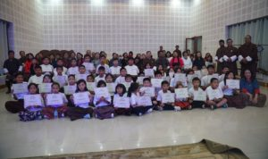

Actualización sobre el proyecto Music4All Bhutan.
El año pasado presentamos el proyecto Music4All cuyo fin es mejorar la vida de niños desaventajados en Bhutan y Nepal a través de la música , ( https://gnhcenterspain.org/nuevas-actividades-y-proyecto-de-musica/ ); proyecto en el cual colaboramos con la Universidad Politécnica de Cartagena (que proporciona fondos de la Unión Europea a través de un programa de Erasmus) ( https://bnesdg.eu/concepts/ – ) y con la Fundación Por La Música ( https://accionporlamusica.es ) que proporciona su metodología y su experiencia en muchos países.
Alumnos de la Escuela de Musica en Buthan
Ahora me complace enormemente poder deciros que con vuestra inestimable ayuda el proyecto sigue en marcha,y la mejor manera de poder apreciar esto es verlo en el vídeo que hemos preparado para vuestro disfrute y satisfacción en este link https://youtu.be/OPNmyAe5q7A
Esp ero que este vídeo os convenza para seguir con vuestra contribución anual ( https://gnhcenterspain.org/participa/ ) sin la cual los objetivos del proyecto quedarían seriamente perjudicados.
Pronto organizaremos una mesa redonda para hablar en mayor profundidad del proyecto y de las posibilidades de ir a Bhutan .
Asociarse al Centro GNH Spain
